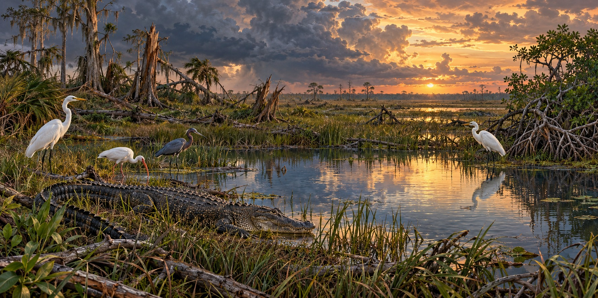

The Everglades After a Hurricane
What Comes Back, What Never Should Have Gotten Loose, and Why It Matters Either Way

A hurricane passes through an Everglades already changed by drainage, development and introduced species. Wind and surge are immediate disturbances, but what recovers depends on the habitat and water conditions that remain. Burmese pythons add a continuing pressure: the National Park Service traces their introduction to the exotic pet trade, not to one established hurricane-origin event.
A Hole in the Ground That Holds Up an Ecosystem
American alligators are what biologists call “ecosystem engineers.” The holes they dig and maintain hold water through the dry season, creating refuge and feeding sites for wading birds, fish and other reptiles. A hurricane that damages alligator habitat or drives alligators from their holes removes a structural feature an entire community has organized its survival around.
From Endangered to Recovered, With an Asterisk
The American alligator recovered after federal and state protection and was removed from the endangered list in 1987. It remains federally protected under a similarity-of-appearance classification. American crocodiles also remain protected. These recoveries do not mean that habitat and water-management problems have disappeared.
Restoring Habitat Along the Kissimmee
Kissimmee River restoration rebuilt parts of a river system altered by channelization. Restored flow and floodplain habitat can support wading birds and other wildlife. Research that models habitat for eight bird species is not evidence that eight species all returned because of the project; predictions and measured recovery are different kinds of evidence.
A Continuing Invasive-Species Problem
Burmese pythons became established through releases or escapes associated with the pet trade. Researchers have linked their spread to major declines in several mammal populations in the park. Hurricane damage may feature in some accounts, but it does not establish when or how the entire invasive population began.
Unwelcome Plants and Altered Habitat
Non-native plants such as melaleuca, Brazilian peppertree and Old World climbing fern can displace native vegetation. Their effects can persist between storms. Recovery work therefore involves existing invasive-species management as well as repairing damage from a particular hurricane.
Water Conditions Shape Recovery
Water quality, depth, timing and movement all affect Everglades habitat. More water is not automatically better at every place or season, and stormwater can carry salt or excess nutrients. Restoration tries to improve those conditions over time, so surviving the wind is only the beginning of ecological recovery.
Quick Facts
| Alligator role | “Ecosystem engineer”: dug holes hold dry-season water |
|---|---|
| Alligator status | Recovered in 1987; remains protected under similarity-of-appearance provisions |
| Kissimmee restoration | Restored river and floodplain habitat; models and observations are different evidence |
| Burmese python | Established invasive species introduced through the exotic pet trade |
Did You Know?
Alligator holes are the Everglades’ dry-season water supply for other animals.
The American alligator went from endangered to recovered in twenty years.
Vocabulary
Ecosystem engineer: a species that physically shapes its habitat for other species.
Invasive species: a non-native species that spreads and harms its new environment.
Channelization: straightening and deepening a river into a canal.
Discussion Questions
1. Why does recovery in the Everglades not mean returning to how things were?
2. Why do water quality and seasonal timing matter to wildlife recovery?
Related Articles
FLH-0007 — Hurricane Andrew (1992)
FLH-0027 — Why Lake Okeechobee Became Dangerous
FLH-0028 — Hurricanes and the Everglades
FLH-0029 — Take Care of the Water
FLH-0041 — Birds Before the Storm
Sources
U.S. Geological Survey. “American Alligator Ecology and Monitoring for the Comprehensive Everglades Restoration Plan.” pubs.usgs.gov
Everglades Foundation. “Everything You Need to Know About Everglades Restoration Projects.” evergladesfoundation.org
National Wildlife Federation. “The Everglades.” nwf.org
D’Acunto, L. E., L. Pearlstine and S. S. Romañach. “Joint Species Distribution Models of Everglades Wading Birds to Inform Restoration Planning.” PLOS ONE, 2021.
NPS — Introduced species and the pet trade